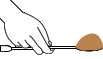

VANE SHEAR TEST
Objective:
To determine the shear strength of soft sensitive clay by using the Vane Shear test.
Apparatus used:
Vane Shear Apparatus, Metal tube, Measuring scale, Straight edge tool, Weighing balance etc.


 Description
Vane shear test is one of the most common in situ methods of testing, adopted to find out the undrained compressive strength of the soil for the present site conditions.
Description
Vane shear test is one of the most common in situ methods of testing, adopted to find out the undrained compressive strength of the soil for the present site conditions.
Take the clay sample in a container and mix it with water until a fine paste is formed.


Measure the weight of empty metal tube.


Weight of empty metal tube = _________ g
Fill the metal tube with the wet soil sample.
Level the sample in the metal tube using a straight edge tool.
Measure the weight of metal tube with wet soil sample.
Weight of metal tube + wet soil, W2 = _________ g
Measure the height and diameter of the vane.

Height of the vane = _________cm
Diameter of the vane = _________cm
Repeat the procedure for 2 more trials
Mount the specimen container on the Vane Shear test Apparatus.

Now lower the shear vanes into the sample such that the top of the vane is at least 1cm below the top surface of the specimen.
Top view
Note down the initial reading of the angle of twist as shown by the pointer in the instrument.
120
130
140
Start the Vane Shear apparatus and allow the vanes to rotate at a uniform speed of 0.1°/s until the specimen fails.
120
130
140

When the specimen fails, the strain indicator pointer will move backwards on the circular graduated scale and at this point stop the test.
Note down the final reading of the angle of twist as shown by the pointer.
120
130
140
=
Observations :
| Trial No. | 1 |
| Initial angle of twist | |
| Final angle of twist | |
| Angle of twist |
Repeat the procedure for 2 more trials
Observations :
| Trial No. | Initial angle of twist | Final angle of twist | Angle of twist |
Characteristic Curve
Observations :
| Trial No. | Initial angle of twist | Final angle of twist | Angle of twist, θ (deg) | Torque, T (g/m) | Undrained shear strength, Tf (g/cm2) = T⁄[πd2(H⁄2 + D⁄6)] | Undrained shear strength,
Tf (KN/cm2) = Tf (g/cm2)x0.0981 |
Height of metal tube, h = 7.5cm
Volume of the metal tube, V = πd2h⁄4 = 85.06cm3
Height of vane, H = 1.25cm
Diameter of vane, D = 1.25cm
Inference:
Vane shear test is one of the most commonly used in situ tests conducted to determine the unconfined shear strength of clay in its site conditions.